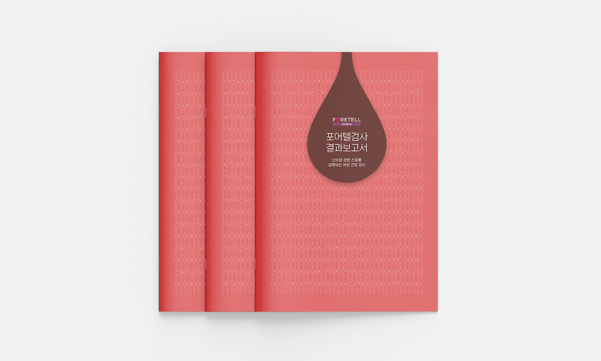
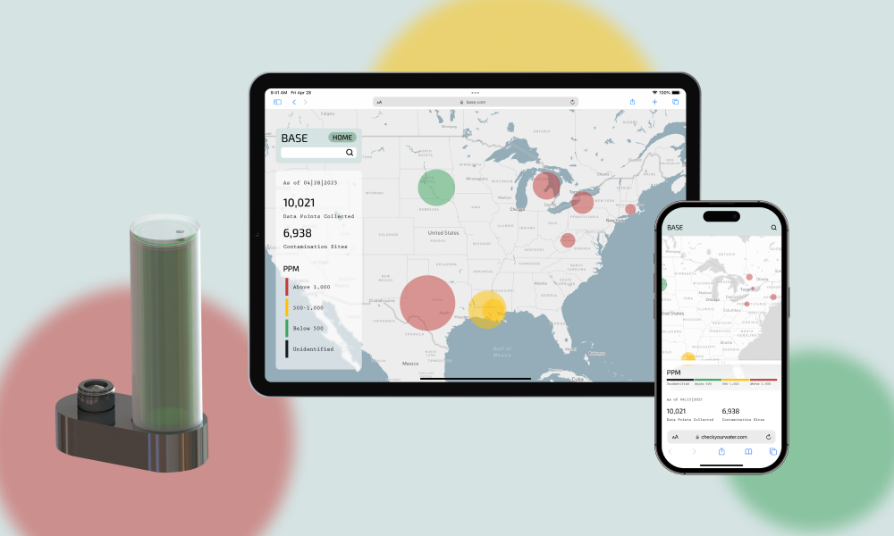
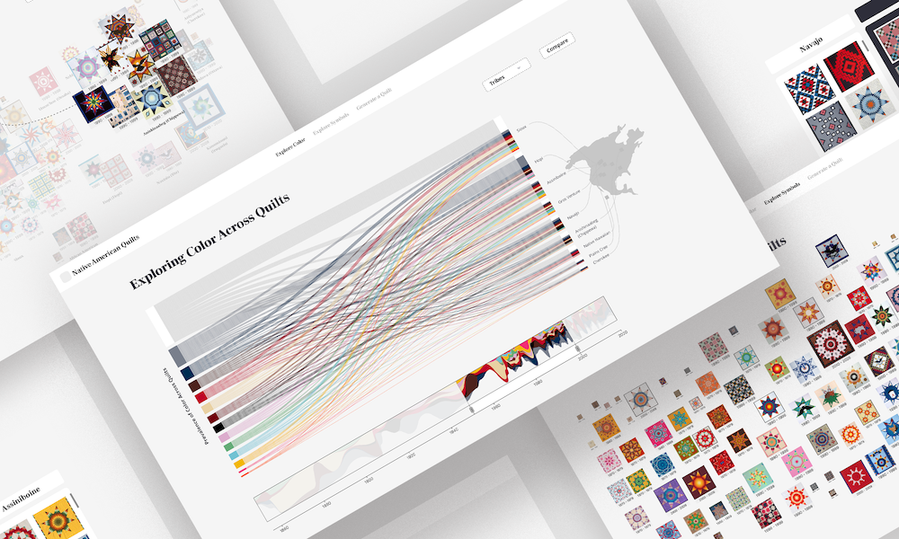

A designer dedicated to creating accessible, user-centered experiences that empower and inspire.

Communicating AI-based cancer risk results clearly to patients
Password protected — contact for access
Enhancing post-rideshare navigation for visually impaired users

Detecting real-time water contamination with a sensor

Visualizing Native American quilting history and culture